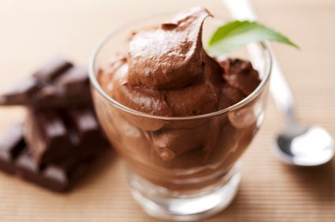

Ingredients:
- 200g Dark Energy Chocolate
- 2 Tablespoons Whiskey
- 5 Eggs
- 300ml Cream
- 1 teaspoon Vanilla
- 1 teaspoon instant coffee
Method:
- Break the chocolate into a bowl and place it in the oven to melt (it will hold its form even when melted so do not burn it; 7 or 8 minutes at 180C should be enough).
- Let the chocolate cool a bit while you separete the yolks and whites.
- When the chocolate is cool enough for you to plunge your finger in without inflicting a severe burn, mix the egg yolks in with the chocolate; mix with a fork.
- Add vanilla.
- Mix a teaspoon of instant coffee in a tablespoon of water and add to the chocolate mixture.
- Now beat the egg whites until they are stiff.
- Using the same beater, beat the cream in a third bowl until thick.
- Now add the whiskey to the cream.
- Take the chocolate mixture and mix it into the cream. Add a little egg white to choc mixture to lighten.
- Lastly, mix everything into into the egg whites with a steel spoon.
- Spoon into cocktail glasses and allow mousse to set in the refrigerator
Mousse should be rich, stiff and fluffy with a texture of tiny chocolate bubbles and a hint of single malt.